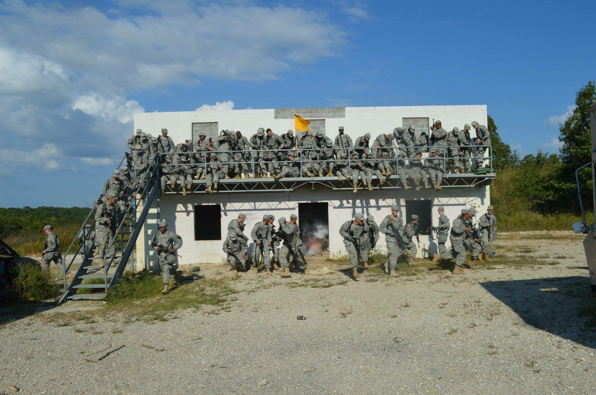

United States Army
Chemical, Biological, Radiological,
Nuclear Specialist
-In April of 2014 I decided to take the oath of
enlistment and join the united States Army. At the time I was a 17 year
old, junior in high school. I went to and completed bootcamp at Fort
Leonard Wood, Missouri in the summer in between my junior and senior
year of high school.
-In 2015, Upon graduation from high school, I shipped
out to my job training to become a Chemical, Biological, Radiological,
Nuclear Specialist (Chemical, Biological, and Nuclear warfare expert). I
graduated in the top 10% of my class and made the Commandant's List.
-Upon graduation from my job training I shipped out
to my unit where I soon found out that we would be deploying in early
2016 to the Middle East in direct support of the war on terror. I spent
about 11 months deployed and spent time in various parts of Iraq and
Kuwait (click the "Deployment" link at the bottom of the page to learn
more about my deployment).
-Upon returning home in 2017, I decided that it was
time to pursue a college education so I went reserve and decided to
attend the University of Maine using my Post 9/11 GI Bill.
| My basic training (boot camp)
class |
|  My job training class. The
explosion that we are all running from is a CS Gas Grenade that the
Drill Sergeants threw at us. |
| The "room" that I stayed
in while I was in the Al Anbar Province of Iraq |
| The day I came home from
deployment, Seeing my Dad for the first time in over 11 months. |
| | | |